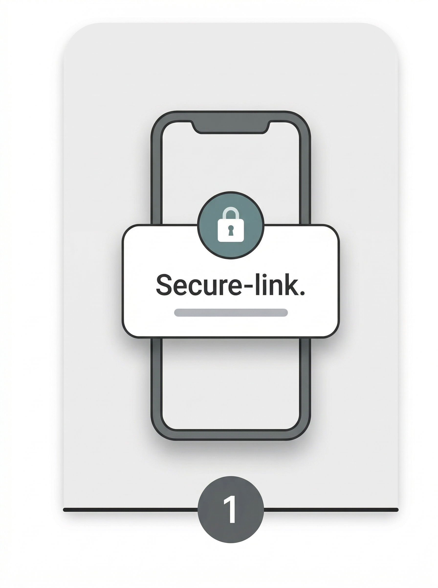
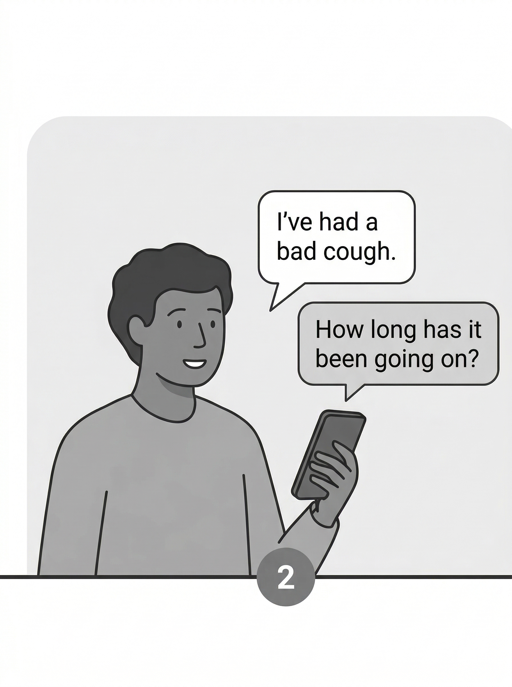
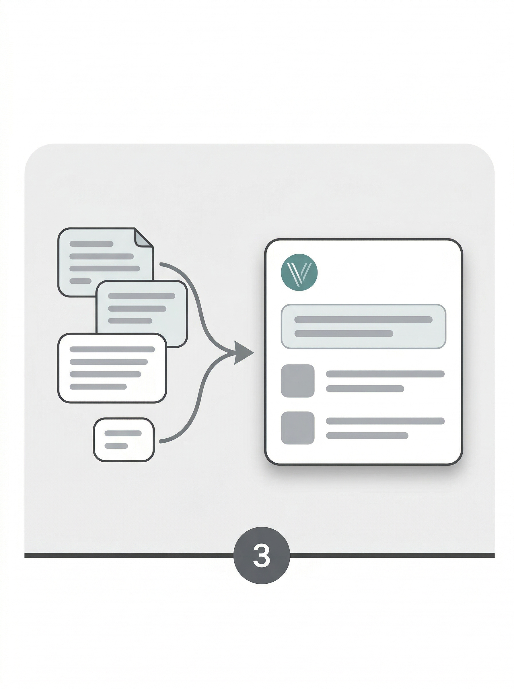
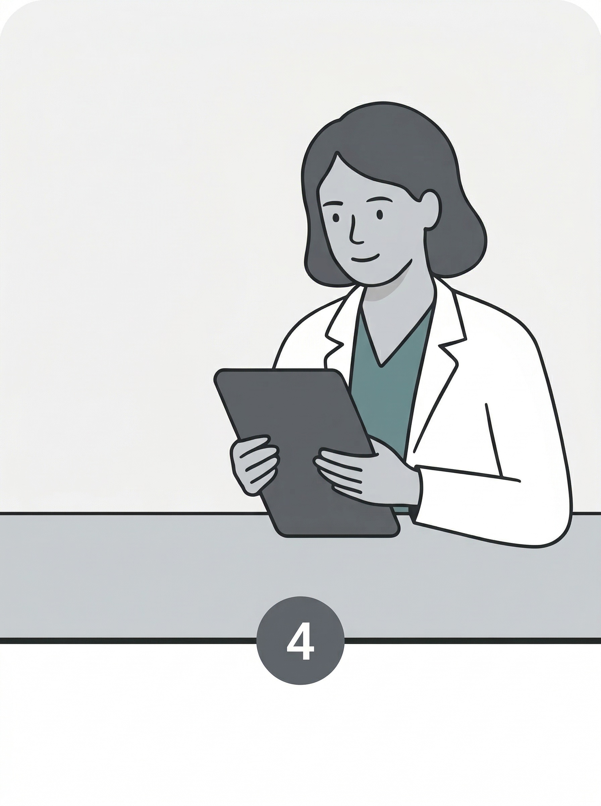

Invite sent
Patient receives secure pre-visit link.




Patient receives secure pre-visit link.
Vox asks follow-up questions and captures the story.
Patient story becomes a clinician-ready handoff.
Sets up a more efficient visit.